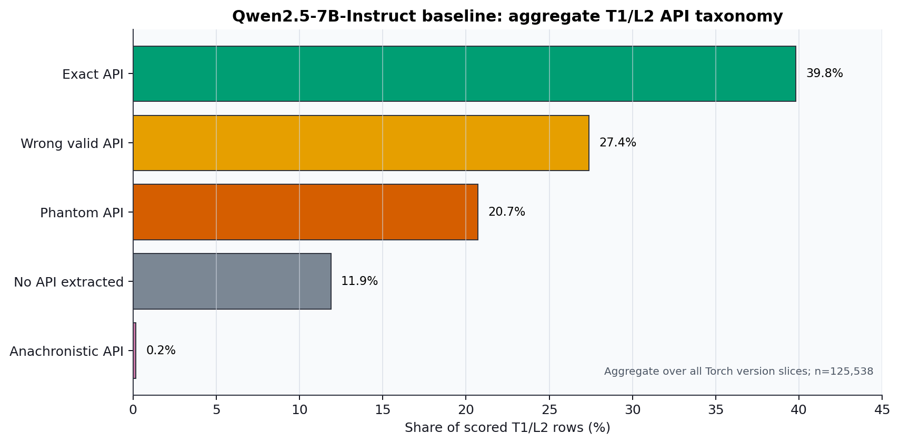
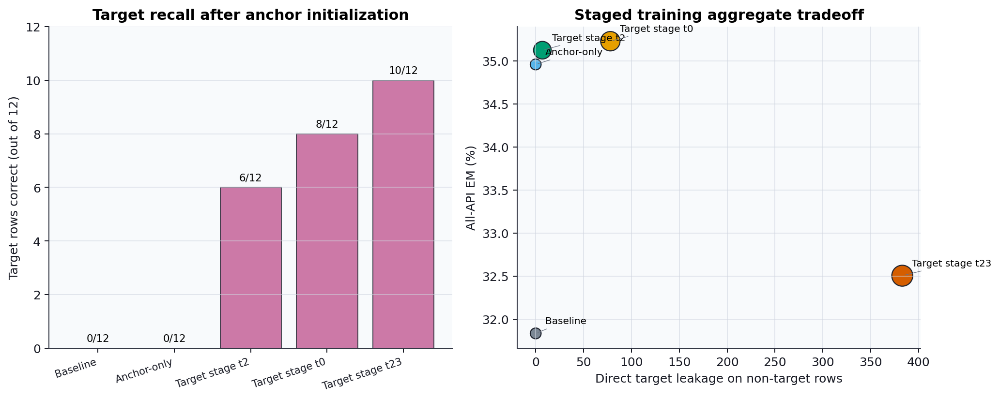
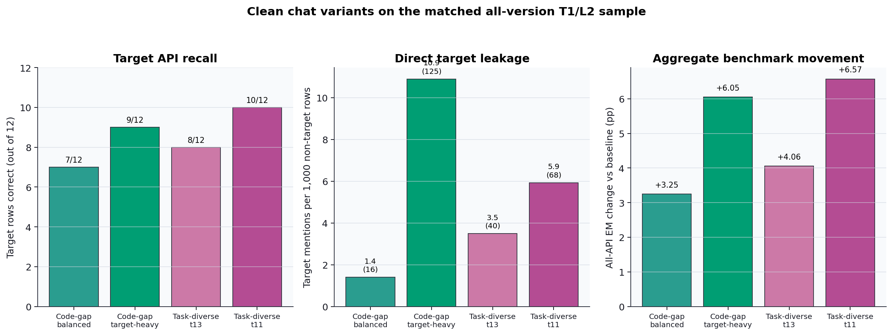
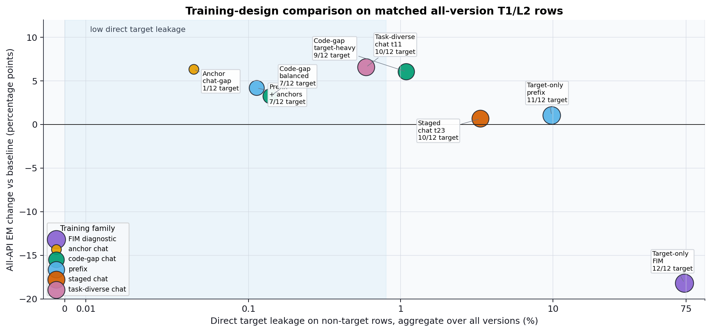
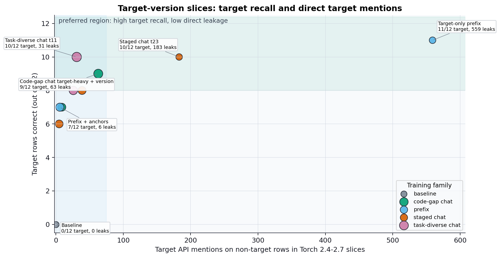
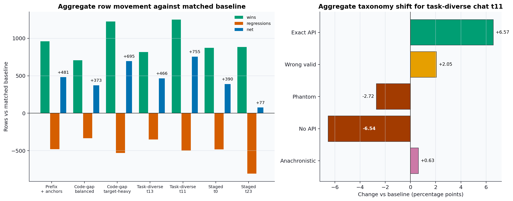
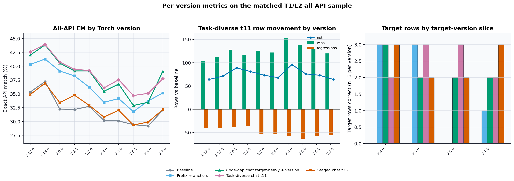

Current focus: understand whether source-grounded SFT can teach missing API knowledge without only aligning to the benchmark task or damaging already-correct API use.
Alexandru Ojica
Progress review
May 2026
A completion can look plausible but still violate the API surface of the requested library version.
| Scorer label | Meaning in the benchmark scorer |
|---|---|
correct | Extracted API path equals the target API path. |
wrong_api_valid | Predicted API exists in the target version, but is not the target API for the row. |
phantom | Resolved predicted API does not exist in the API compatibility matrix. |
anachronistic | Predicted API exists in some version, but not in the requested target version. |
no_api | No API-like span is extracted from the generated completion. |
unresolvable is used after API-span extraction when the scorer cannot reconstruct a canonical full API path from the target prefix/leaf alignment.| Question | What it asks concretely | Evidence so far |
|---|---|---|
| RQ1 | Which API failure modes dominate model outputs? | Baseline outputs are decomposed into exact, wrong-valid, phantom, no-API, anachronistic, and parameter errors. |
| RQ2 | Can source-grounded synthetic examples represent missing API knowledge? | Target-positive rows, anchors, version comments, and task-diverse chat variants were built and manually audited for the current diagnostic API. |
| RQ3 | Can LoRA SFT make the model use a missing API? | Yes in controlled cases: target rows moved from 0/12 to as high as 10/12, depending on task and data mix. |
| RQ4 | Are gains API learning, benchmark-task alignment, or interference? | Still the central open issue; paired movement shows hundreds of non-target wins and regressions. |
| RQ5 | Can the recipe scale to full version specialists? | Open; scaling should follow only after the controlled diagnostic shows target learning with bounded leakage and retention loss. |
id_f1 only 0.7961 -> 0.7974.1025 / 1055 predictions were string-identical to the baseline in the key overlap-v2 comparison.25 / 1055 benchmark rows involved APIs changed between Torch 2.0.0 and 2.2.0.
11,485-row T1/L2 sample so tuned models and the baseline are compared on the same rows.if not torch.compiler.is_compiling():
update_runtime_state()torch.compiler.is_compiling is absent before Torch 2.3 in the benchmark API matrix and valid from 2.3 onward.0/12 exact target rows.torch.compiler.is_compiling.| Training family | Design | All-API EM | Target rows | Direct target mentions on non-target rows | Interpretation |
|---|---|---|---|---|---|
| FIM | target only | 13.66% | 12/12 | 8397 | Proves acquisition is possible, but collapses into a target-string prior. |
| Prefix | target only | 32.87% | 11/12 | 1129 | Less destructive than FIM, still too much overuse. |
| Chat gap | target only | 32.33% | 8/12 | 165 | Benchmark-like chat can learn the API, but leakage remains. |
| FIM | target + anchors | 42.67% | 9/12 | 38 | Best overall diagnostic point; strong but FIM-specific. |
| Prefix | target + anchors | 35.76% | 7/12 | 29 | Anchors reduce overuse but weaken target transfer. |
| Chat gap | target + anchors | 38.17% | 1/12 | 7 | Strong evidence of task/API-selection alignment without target learning. |

0/12.10/12.
All panels use the matched 11,485-row T1/L2 all-version sample. Task-diverse trial 11 improves over the target-heavy code-gap point on all three plotted axes: 10/12 vs 9/12 target rows, 68 vs 125 direct target mentions, and +6.57 pp vs +6.05 pp all-API EM. It does not dominate the balanced code-gap point on leakage (16 mentions).

Aggregate over all Torch version slices in the matched 11,485-row T1/L2 sample. Marker size is target-row recall. This plot includes diagnostic controls: target-only training can learn the target string while damaging broad EM, and anchor-heavy chat can improve broad EM while barely learning the target API.

Only Torch version slices that contain sampled target-API rows are included in the x-axis denominator: 2.4.0, 2.5.0, 2.6.0, and 2.7.0. The useful region is high target exact match with low direct target mentions on non-target rows from these same slices.

31.83% to 38.41%.0/12 to 10/12.1251 / 496.10 of the 1251 wins.no_api and phantom outputs, plus more exact API choices.
Left: per-version all-API EM on the matched 11,485-row T1/L2 sample. Middle: task-diverse chat trial 11 wins, regressions, and net movement against the matched baseline by version. Right: target-row recall only on slices where target rows are present (n=3 each).
0/12 to 6-10/12 in several controlled runs.+6.34 pp broad EM but only 1/12 target rows.12/12, but leaks on 73.19% of non-target rows and collapses broad EM.The scorer exposes exact API, wrong-valid, phantom, no-API, anachronistic, and signature categories.
For torch.compiler.is_compiling, chat SFT moved target rows from 0/12 to 10/12 in the best task-diverse checkpoint.
The same adapters also move many non-target rows, so the next step is reducing leakage and regressions with anchors, hard negatives, and version negatives.
Questions on the benchmark pivot, single-API controls, task alignment versus knowledge injection, or the next experiment design.